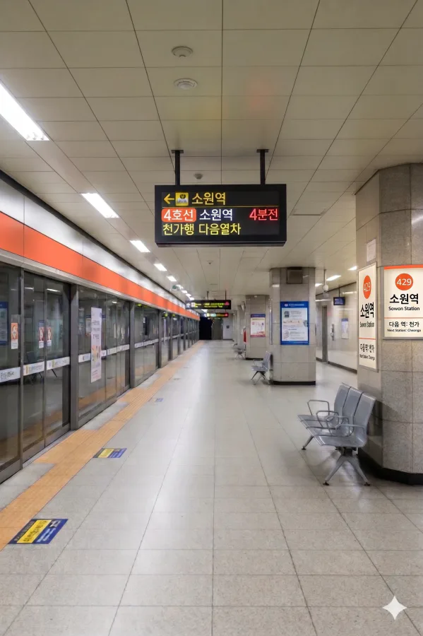

효빈 도시철도 4호선 429번 역. 효빈광역시 탄성군 소원면 소원리 613에 위치해 있다.
탄성군의 소박한 마을에 위치한 지하역이지만, 이름 때문에 특정 팬덤에게는 성지 취급을 받기도 하는 기묘한 역이다.
|
4
소원역 출구 정보
|
||
|---|---|---|
| 번호 | 주요 시설 및 방향 | 비고 |
| 1 | 서수초등학교 | |
| 2 | 윤부중학교, 서수아파트 | |
| 소원역 이용객 통계 | ||
|---|---|---|
| 연도 | 일평균 이용객 | 비고 |
| 2020년 | 3,753명 | |
| 2021년 | 3,791명 | |
| 2022년 | 4,623명 | |
| 2023년 | 5,025명 | |
| 2024년 | 5,462명 | |
※ 복선 상대식 승강장

| 서수 ↑ | ||||
| 하행 | ㅣ | ㅣ | 상행 | |
| ↓ 천가 | ||||
| 상행 | 4 효빈 도시철도 4호선 (완행/급행) | 해운산업지구 방면 (급행 정차 - 이전 역: 이자) |
| 하행 | 4 효빈 도시철도 4호선 (완행/급행) | 천가 방면 (급행 정차) |
| 구분 | 정류소명 | 노선 번호 |
|---|---|---|
| 순방향 | 소원 | 2, 35, 58, 552, 소원01, 소원02 |
| 역방향 | 소원(건너편) | 02-1, 53, 85, 552-1, 소원01-1, 소원02-1 |
| 임의생성 | 탄성군 농어촌 | 탄성100, 탄성200, 탄성300 |